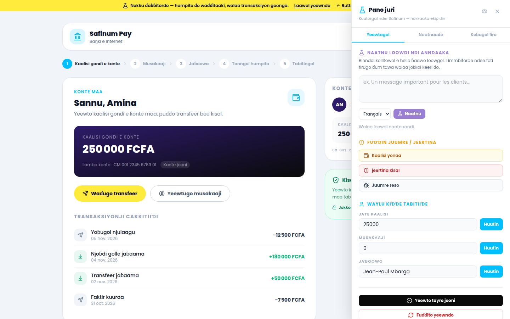
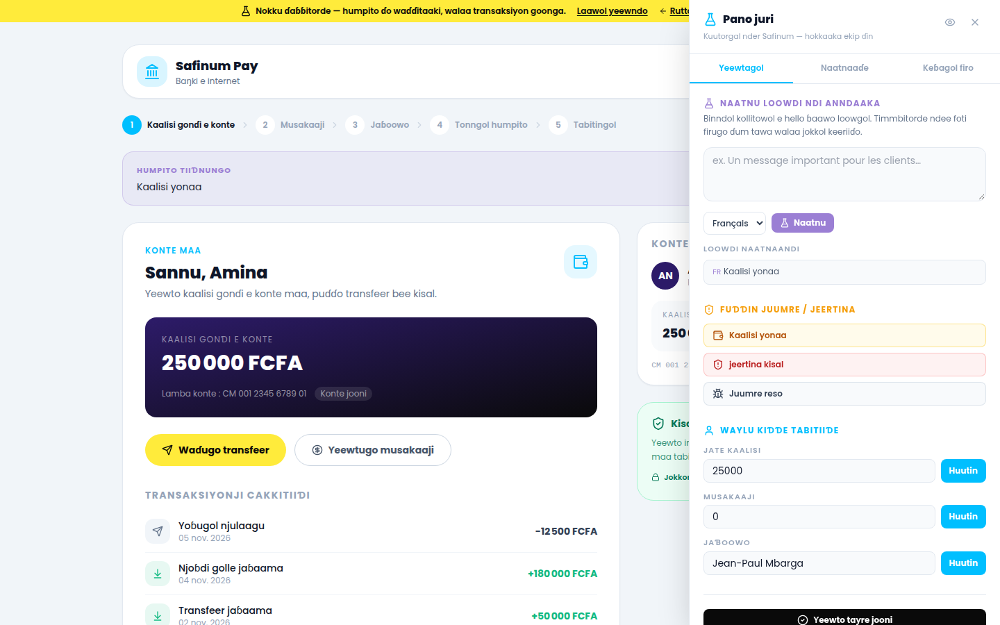
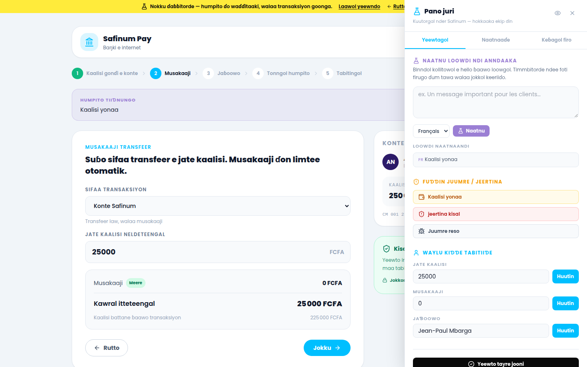

KORATraduction financière privée et locale
SAFINUM Innovate Challenge 2026
La finance numérique en fulfulde, sans sacrifier l’intégrité.
Extension Chrome locale qui traduit les interfaces françaises et anglaises vers le fulfulde de l’Adamaoua, sans modifier le service et sans transmettre les données.
Hors ligneAucune API de traduction
504concepts financiers
27/27tests unitaires réussis
01 · Résumé exécutif
Comprendre et agir dans sa langue
KORA rend une interface financière existante accessible en fulfulde de l’Adamaoua (`fub`) directement dans Chrome. Le code du service n’est pas modifié et aucune donnée de la page ne quitte l’appareil.
Problème
Une interface uniquement en français ou en anglais peut compliquer la compréhension d’un solde, de frais, d’une confirmation ou d’une alerte de sécurité.
Réponse KORA
Traduire le texte visible, y compris le contenu ajouté après chargement, tout en protégeant les montants, devises, références, noms et saisies.
FR + ENdétection vers fulfulde
1 252cas de fautes testés
0 octetde page transmis
Principe de sûreté : si KORA ne peut pas garantir le sens d’un texte financier, il conserve l’original au lieu d’inventer une traduction.
Livrable fonctionnel
- Extension Chrome Manifest V3 installable en mode développeur.
- Traduction français/anglais vers Adamawa Fulfulde sur une page ordinaire.
- Observation du DOM dynamique sans hook fourni par Safinum.
- Restauration exacte du texte original en choisissant Français ou English.
- Modèle linguistique embarqué, exportable et utilisable séparément.
Adéquation au défi
KORA respecte le scénario imposé : prototype simulé, aucune transaction réelle, aucun identifiant bancaire réel, aucune collecte et aucune modification du code source du service financier.
02 · Démonstration
Le parcours Safinum traduit, valeurs intactes

Capture réelle du site Safinum avec l’extension chargée. Le montant 250 000 FCFA, le compte et les transactions restent identiques.
1 · SoldeConsulter le compte
2 · FraisChoisir l’opération
3 · BénéficiairePréserver la saisie
4 · ContrôleVérifier les valeurs
5 · ReçuConserver la référence
Ce qui est traduit
Libellés, boutons, explications, alertes, attributs accessibles, options visibles et textes injectés.
Ce qui reste intact
Montants, frais, devise, numéros, dates, références, noms propres et valeurs saisies par l’utilisateur.
03 · Contenu dynamique et robustesse
Traduire après le chargement, même avec une faute

Preuve réelle : « sodle insufisant » injecté après chargement est rapproché d’un sens financier unique puis rendu « Kaalisi yonaa ».
Surfaces observées
- nœuds texte ajoutés ou remplacés;
- `placeholder`, `aria-label` et `title`;
- options de sélection, sans toucher à leur valeur;
- Shadow DOM ouvert;
- iframes autorisées par Chrome.
Correction contrôlée
- accents ou ponctuation manquants;
- lettre ajoutée, supprimée ou remplacée;
- lettres voisines inversées;
- jusqu’à quatre opérations sur un long libellé;
- abstention en cas d’ambiguïté.
Aucune modification des entrées : le texte d’un champ reste celui de l’utilisateur. Seul le texte rendu par la page après injection est traduit.
04 · Architecture
Une chaîne locale, explicable et testable
PopupLangue et activation
Content scriptDOM et mutations
MoteurProtection et détection
MémoiresFR/EN → fub
ModèleClassement de fluidité
Interface`popup.js` gère Fulfulde, Français, English et l’état local.
Intégration`content.js` collecte le texte accessible, protège les champs, observe les mutations et restaure l’original.
Sûreté`engine.js` protège les valeurs, détecte FR/EN, applique la mémoire exacte, les gabarits ou l’abstention.
Langue`spelling.js`, mémoires terminologiques et modèle neuronal/n-gramme local classent seulement des formulations connues.
Données`chrome.storage.local` conserve uniquement activation et langue; aucun texte de page n’est enregistré.
Flux d’une traduction
- Le nœud visible est lu; les nombres et identifiants sont remplacés par des jetons protégés.
- La langue source est détectée entre français et anglais.
- La mémoire cherche une expression exacte; sinon le correcteur tente un rapprochement unique.
- Le modèle classe les formulations sûres, sans générer de nouveau sens financier.
- Les valeurs sont réinsérées à l’identique, puis le texte visible est mis à jour.
Page Web ──texte──▶ Protection ──▶ Mémoire/Correcteur ──▶ Modèle fub
▲ │
└──────────── texte original ou traduction sûre ◀────────┘
05 · Modèle linguistique embarqué
Des modèles légers au service du sens
Le paquet contient les mémoires, les gabarits, le correcteur, un modèle neuronal int8 et un repli n-gramme. Tout s’exécute dans le navigateur, sans GPU ni téléchargement.
185 120paramètres int8
1 472unités de vocabulaire
3 motsde contexte neuronal
Corpus et mémoire
- 1 067 phrases Adamawa Fulfulde Common Voice 27, CC0;
- 9 368 tokens Common Voice;
- 262 formulations KORA contrôlées;
- 386 formulations terminologiques candidates pondérées;
- 504 concepts financiers dédupliqués.
Validation du modèle
- 107 phrases Common Voice séparées;
- top-1 : 14,8 %;
- top-5 : 35,0 %;
- arrêt anticipé reproductible;
- aucune génération libre d’instruction critique.
Utilisation indépendante
npm run model:export # produit release/kora-fub-neural-model.json
npm run model:demo # exécute un exemple de prédiction et de score
npm run model:train # réentraîne après préparation de .venv
Les métriques de prédiction mesurent le mot suivant, pas la qualité de traduction. La fidélité financière est assurée séparément par les mémoires contrôlées, les règles d’intégrité et l’abstention.
06 · Sécurité, confidentialité et accessibilité
Protéger avant de traduire
Confidentialité
- Aucun serveur KORA.
- Aucune API distante.
- Aucune télémétrie.
- Aucun texte de page stocké.
- Aucune permission réseau dans le manifest.
Intégrité financière
- Montants et devises protégés.
- Comptes et téléphones protégés.
- Noms et références protégés.
- Valeurs des champs inchangées.
- Original conservé si doute.

Le calcul reste celui de Safinum : 25 000 FCFA, 0 FCFA de frais et 25 000 FCFA de total. KORA ne modifie que les libellés.
Accessibilité
La popup est navigable au clavier, expose des libellés compréhensibles, conserve un contraste élevé et rend le focus à la page après l’action. KORA traduit `aria-label`, `title` et `placeholder` lorsque cela améliore la compréhension, sans remplacer les valeurs techniques.
07 · Vérification et reproductibilité
Des preuves automatisées et un parcours manuel
27/27tests unitaires
1 252fautes générées
5/5étapes Safinum
Commandes de vérification
npm install
npm test # moteur, corpus, export, orthographe
npm run test:popup # état, langues, navigation
npm run test:pages # contenu dynamique, champs, Ctrl+A
npm run test:live # parcours Safinum
npm run test:uba # page bancaire externe
npm run package # ZIP installable + modèle exporté
Installation de l’extension
- Décompresser `kora-extension.zip`.
- Ouvrir `chrome://extensions` et activer le mode développeur.
- Choisir « Charger l’extension non empaquetée ».
- Sélectionner le dossier contenant directement `manifest.json`.
- Ouvrir une page normale, puis choisir Fulfulde dans la popup KORA.
Limites connues
- Chrome interdit l’injection dans ses pages internes et dans le Chrome Web Store.
- Le texte dessiné dans une image, un canvas ou un Shadow DOM fermé n’est pas accessible.
- Les termes candidats demandent encore une validation communautaire multi-régionale.
- KORA privilégie la sûreté : une phrase hors mémoire peut rester dans la langue source.
Reproductible : le dépôt contient le code source, les corpus traçables, les tests, les scripts de construction, le modèle exportable et le paquet final.
08 · Linguistique, dépendances et droits
Une base traçable, à consolider avec la communauté
Méthode de validation linguistique
- Consolidation et déduplication de deux corpus terminologiques financiers.
- Correction des faux sens et accords signalés : compte bloqué, date de valeur, découvert autorisé, paiement récurrent, sans contact, remboursement et rétrofacturation.
- Harmonisation des noms d’action en `-ugol` pour les concepts.
- Tests bidirectionnels FR/EN vers une même formulation fub.
- Statuts explicites : contrôlé, candidat compositionnel ou emprunt local.
- Responsabilité linguistique : M. Jean Ernset Souroumbai.
Les 371 concepts encore marqués candidats sont inclus à poids réduit et ne sont pas présentés comme une norme. Une double validation par des locuteurs de plusieurs régions reste l’étape requise avant déploiement à grande échelle.
Dépendances et composants tiers déclarés
Exécution de l’extension
Aucune dépendance externe, aucune API et aucun service réseau. JavaScript natif Chrome Manifest V3.
Développement
Node.js, esbuild et Puppeteer Core. Python, NumPy et PyTorch servent à la génération d’icônes et à l’entraînement. ElevenLabs narre la vidéo; Web Audio produit sa musique originale.
Sources et licences
- Mozilla Common Voice 27, sous CC0, pour le corpus fub d’entraînement.
- Corpus terminologiques fournis au projet, conservés avec provenance et statut.
- ElevenLabs, voix Lucie, pour la narration française publique de la vidéo; aucune donnée de page transmise.
- Code KORA distribué sous licence MIT.
09 · Équipe et remise
KORA TEAM
Une solution camerounaise centrée sur l’accès linguistique, la confidentialité et la confiance dans les opérations financières numériques.
Azab A Ranga Franck MiguelResponsable d’équipe
Bell AqilMembre
Simo Sigeu Nkouamkam MenelikMembre
M. Jean Ernset SouroumbaiResponsabilité de validation linguistique
Contact
E-mail : miguel.azab@facsciences-uy1.cm
Téléphone / WhatsApp : +237 686 826 745
Ville : Yaoundé, Cameroun
Liens de soumission
Dépôt GitHub :
github.com/kaezerwatto/KORA
Fichiers :
`release/kora-extension.zip`
`release/KORA-Documentation-SAFINUM.pdf`
`release/KORA_Demo_Pitch_SAFINUM_2026.webm`
KORA traduit les mots, protège les valeurs et conserve le contrôle sur l’appareil.
Document préparé pour le SAFINUM Innovate Challenge 2026. Les opérations présentées sont entièrement simulées.